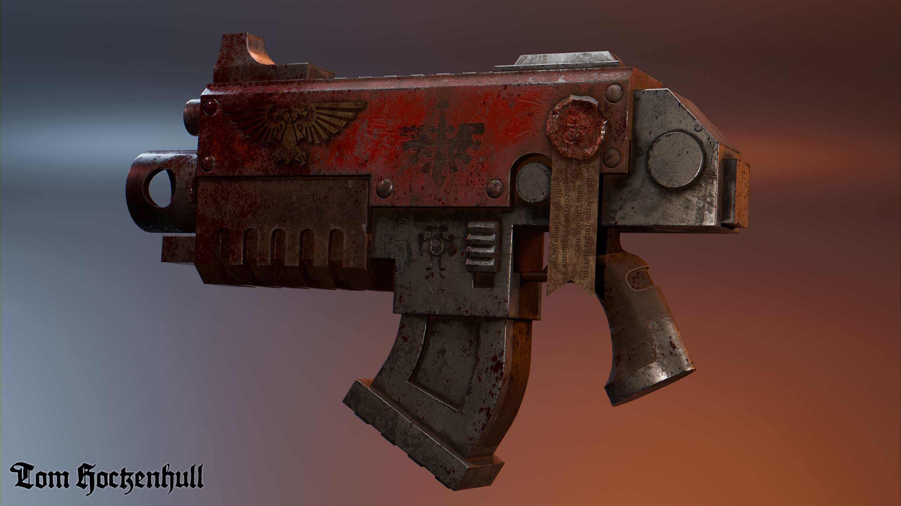
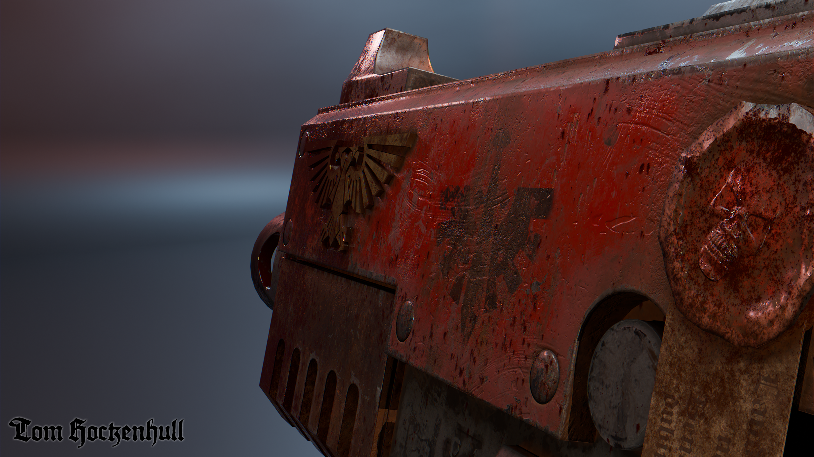
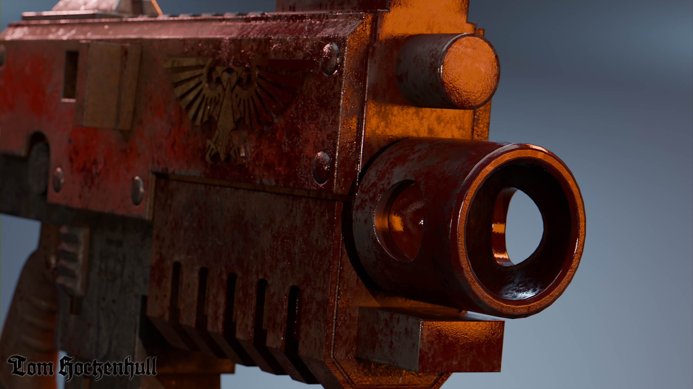

Turntable
Well it's been a while. A whole year since I last posted something. But I have been busy in that time, starting a teaching job, learning Blender and developing my skills on some smaller projects.
One of the first models I created in Blender was a 40K bolter. I've had a bit of a fixation on the Dark Angels lately as I'm in the process of painting Lion El'Jonson.
The boxy design of bolters lends itself well to a hard surface workflow and the grimdark universe of 40k offers a great setting for a project like this, allowing me to create some really dirty and worn textures for the weapon. Previous weapons I've done have been more grounded in reality with the dirt and grime reeled in to imply a well maintained weapon.

Learning Blender was actually easier than I expected, when you're teaching something while you're learning it the little lessons you learn really sink in. The transition from Max to Blender was a little tricky but it's something I've been meaning to do since my third year of University, at this point I am roughly as proficient in Blender as I was in 3DS Max.


I've also further developed my texturing skill set, taking what I learned in my master's project (see the USSR Bunker) and applying it to this project. There are still areas in which I can improve to add further detail to my high poly models but I think this a solid start to my Blender journey.


Asset Flyby.
I have started work on a new environment piece but this will likely take some time to complete due to my schedule as a lecturer.